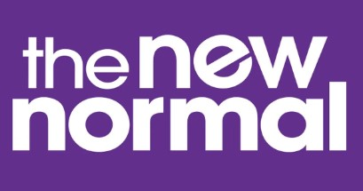

deciding what the new normal will be. image credits: vox.com
description
norms come and go and are very easy to create. all you need is some endear-able ideas, a fancy vocabulary
(that you
can
use to bullcrap around without raising any suspicion), and a
never-ending desire to manipulate the shiz out of people for personal gains.
ingredients
coolness
persuasion deceit and manipulation
people
steps
throw around some cool-sounding ideas.
convince the majority to join you.
watch and wait as they public shame the crap out of the minority for not being "cool" or "modern" enough.